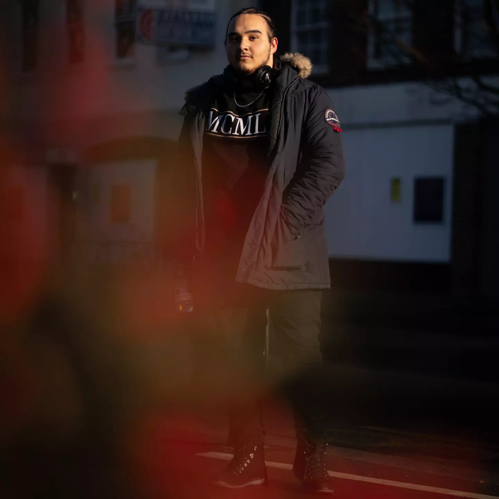
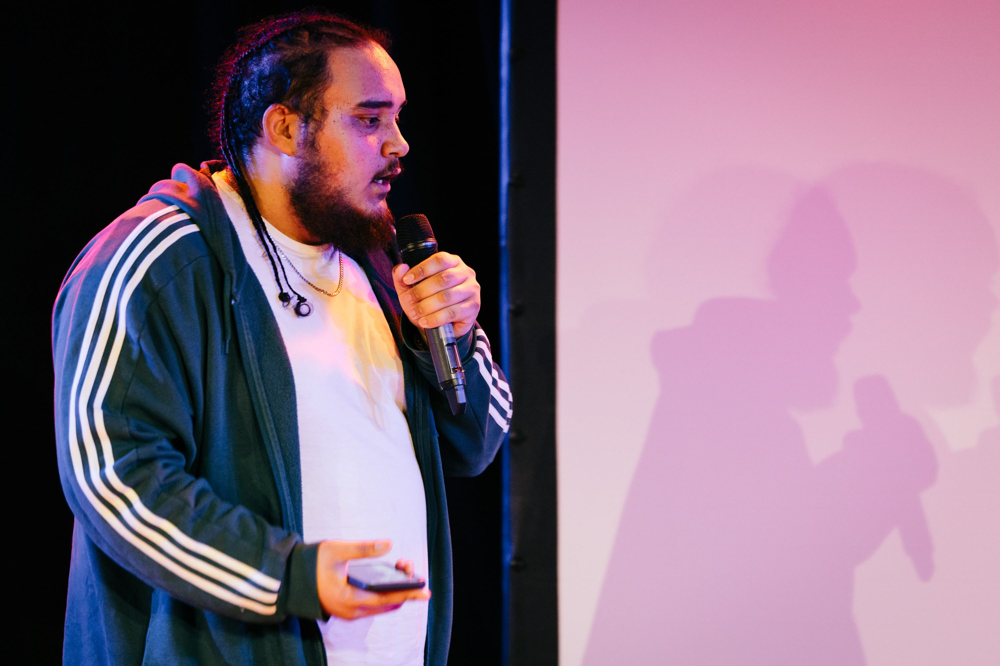

Creative practice / Music, words & performance
Make space
for a voice.
Alongside technical work, I use music, spoken word and performance to explore identity, communication and the stories people carry.

A parallel practice
Technical work is still human work.
Creative practice keeps me attentive to tone, audience and lived experience—whether I am presenting research, designing a system or performing for a room.
Follow creative work ↗
Selected work
Music, words and public moments
A small, curated starting point. More recordings and interviews can be added as they are prepared for publication.

Live performance archive
Updates, rehearsals and creative releases.
Open Instagram ↗Speaking and technical storytelling
Public explanations and project walkthroughs that connect technical ideas to people and context.
Watch on YouTube ↗Interview / featureCommunity voice
A published feature showing how creative work can open conversations beyond the stage.
Read the feature ↗MusicConcert and ensemble work
Music-making, collaboration and performance in community settings.
View the concert feature ↗Public voice / Awareness & insight
Listening in public
These projects bring research and creative communication into direct conversation with people and current social issues.
InstaVu
A page created with William Awomoyi to raise awareness, interview the public and gather insight into current issues.
Visit the InstaVu channel ↗BBC interviewToxic social media subcultures
A public interview discussing the harms and dynamics of toxic online subcultures, and how they affect people beyond the screen.
Watch the BBC interview ↗